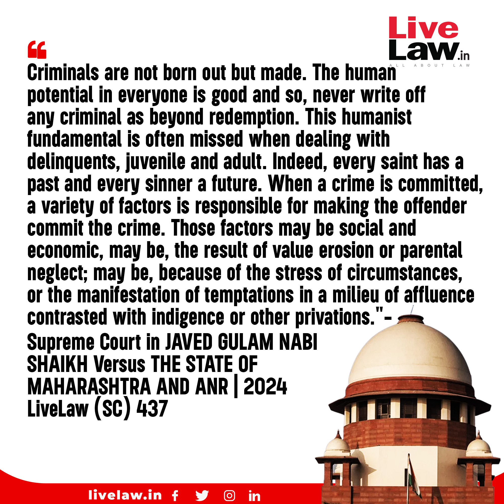
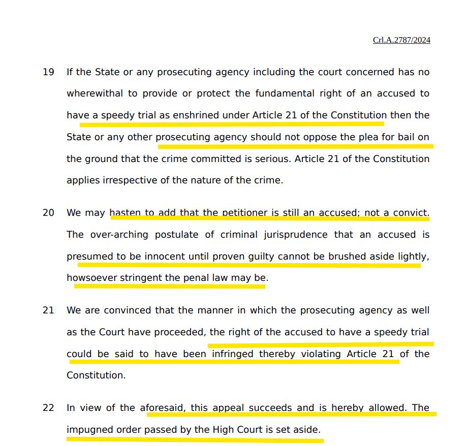

Criminals are not born out but made
Nurture vs. Nature: The Complex Interaction of Genes and Environment
Criminals are not born but made. The court has made an important judgment affirming that a speedy trial is a fundamental right.
If the prosecuting agency can't ensure a speedy trial, they shouldn't oppose bail citing the seriousness of the offense: Supreme Court.
"Innocent until proven guilty" cannot be ruled out, no matter how stringent the penal law may be.
But will this be applicable to all citizens? Does the court follow the rule of law? With crores of cases pending, many don't even get a hearing. It is difficult to get a hearing, with dates getting delayed repeatedly.
For example, in seven years, 10,552 Indians have been arrested under UAPA– but only 253 have been convicted.


Three important cases pending on supreme court
Contitutional Validity of PMLA
Firstly, the constitutional validity of the PMLA is being challenged in the Supreme Court. The law has been criticized for being excessively harsh and disproportionate in its application, with many opposition politicians being targeted under it. The Supreme Court must examine the law's provisions and decide if they are constitutional or not. This case is of utmost importance, as the misuse of the PMLA and the Enforcement Directorate (ED) has been a contentious issue in Indian politics.
What is a Money Bill?
Secondly, the status of the Money Bill is pending before the Supreme Court. The government has been accused of using the Money Bill route to pass unconstitutional laws without the scrutiny of the Rajya Sabha. The apex court must clarify the definition of a Money Bill and ensure that it is not misused by the government. This case is crucial for the balance of power between the executive and legislative branches of the government.
Ritu Chhabria Case
In the Ritu Chhabria case, as per the law, an accused person is entitled to default bail if the charge sheet filed by the state is incomplete and requires further investigation under the Code of Criminal Procedure (CrPC). The time period for an investigative agency to complete an investigation and file a charge sheet ranges from 60 to 90 days, depending on the type of crime. If the agency fails to complete the investigation within the stipulated time, the accused is entitled to default bail or automatic bail.
However, this is not happening. In order to defeat the right to default bail, investigative agencies these days file charge sheets despite not completing the investigation. This is done solely to keep the accused incarcerated for a longer period. As a result, the accused remains incarcerated for a long time, which is a clear violation of their rights and the principles of justice and fairness.
When justice perishes, the people are left to the vultures
The root cause of every big problem in India is now the CJI and the judiciary, whether it's UAPA/PMLA, Money Bill, EVM, or NEET. It is the judiciary that has become a threat to our democracy.
One should learn from the USA: when corruption becomes rampant in the judiciary, impeachment should be pursued.
Corruption, without consequence, infects all it touches.
Congress must exercise its powers to impeach.
Corruption, without consequence, infects all it touches. Congress must exercise its powers to impeach.
— Rep. Alexandria Ocasio-Cortez (@RepAOC) July 11, 2024
The corruption of Justices Thomas & Alito constitutes a clear danger to our democracy. I moved to impeach them because it is the right thing to do for the American people. pic.twitter.com/eOscx9avE1
Are judiciary decisions legitimate?
We need to stop believing the judiciary is legitimate, if they make decision on pseudoscience to serve the powerful.
The entire country rely on Electronic Voting Machines (EVMs) for the electoral process integrity. Despite compelling evidence and widespread concerns regarding the potential flaws and vulnerabilities of EVMs, the Supreme Court rejected Public Interest Litigations (PILs) seeking a thorough investigation. Furthermore, the court denied requests to count all Voter-Verified Paper Audit Trails (VVPATs), an essential verification mechanism, without providing any satisfactory justification.
This example underscores the need for a paradigm shift in understanding power dynamics, as outlined in the pluralistic model of power. This model challenges the perception of power as monolithic or static, instead highlighting its fluid and dispersed nature. In any society, power dynamics can shift rapidly, and ultimately, power emanates from the people. Each individual possesses a small yet significant source of political power, and collectively, they have the agency to grant or revoke power from their rulers.
Power in society ultimately comes from the people. And those people - each of whom is a small, individual source of political power - can change their minds. Rulers only have that power which people provide to them.
In democratic societies, power is ideally granted willingly by the people, but it can also be coerced or relinquished through apathy. Recognizing this dynamic, nonviolent campaigns play a pivotal role in empowering individuals to understand their capacity for change. When people unite and act in strategic, nonviolent ways, they can exert immense pressure on power structures and demand accountability.
The current situation calls for precisely such a response from the citizens. By questioning the legitimacy of the judiciary in the face of unjust decisions, people send a powerful message that they will not tolerate corruption or abuse of power. This sentiment is encapsulated in the pluralistic model of power, which asserts that rulers derive their power from the people and are therefore accountable to them.
Data-Library: Empowering the Philosophy of Bail as the Rule, Jail as the Exception
The implementation of a data library is crucial for ensuring transparency and fairness in the judicial system, especially when it comes to bail decisions. A comprehensive data library would allow for the collection and analysis of information regarding bail rulings made by judges. This library would contain detailed records of each case, including the circumstances, charges, and the judge's decision on whether to grant or deny bail. By having access to this data, stakeholders such as legal professionals, researchers, and policymakers can gain valuable insights into the factors influencing bail outcomes.
One of the key benefits of a data library is the ability to track and analyze the time taken for judges to make bail decisions. With the data, it would be possible to determine the average number of months it takes for a judge to grant or reject a bail application.